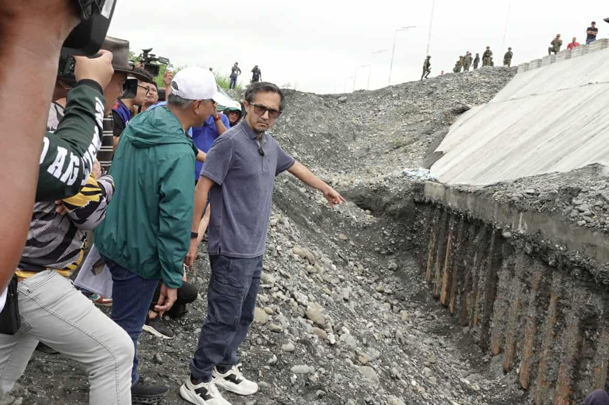

Flood Control: The Ultimate Money Hack
source: https://cdn.manilastandard.net/wp-content/uploads/2025/09/dpwh-mindoro.jpg
It is in no secret that billions of pesos have been smuggled within the system; gone through the mediums of fraudulent flood control projects that are considered as ‘ghost projects’, and political kickbacks that is witnessed by those in office, these scandals are fresh yet have its roots of having a long line of historical corruption cases. This publication provides the practices and how much weight officials take into account these issues mentioned, seeing if they overlook such issues and if their efforts are actually effective in the current economic crisis of the Philippines.
2025, as investigators of the Philippine Department of Justice (DOJ) and the National Bureau of Investigation (NBI)went on and inspected the multiple network of the said ghost projects that are disguised into acting as funds going to the prevention for flood control and other disasters but instead going to the pockets of those who initiated these projects. Starting with the testimony of a mid-level engineer, it is now recognized that the scandal goes over politicians, contractors, and officials.
Among those mentioned, it seems that former senators and lawmakers are accountable for these projects; suspecting four of the six representatives from Quezon City are reported to have diverted billions of pesos. Surprisingly, their methods are as easy as they sound; insert projects into the national budget, award contracts to the friendly companies, and then collect the percentages. It is no understatement that several congressional representatives have benefitted from family-owned contractors winning any other public work projects. However, it is not only politicians but also the engineers and contractors have skimmed these funds, producing an outcome of more than 400 ghost projects that have never even been implemented.
It is beyond absurd how all of this went by the government, it is disappointing to see the nation stoop so low and in the process, messing up their own countrymen. What a destructive way of getting wealth and there must be an immediate stop to this, no change will be resolved if those perpetrators do not get punished with anything, they should not be let to rest comfortably in their offices while their own people are in desperate hunger and are going through an overwhelming amount of disaster.